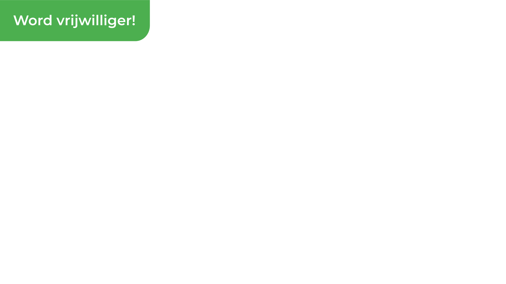
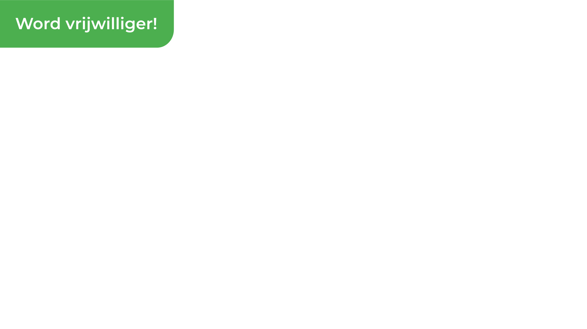

Word vrijwilliger!
Vanaf de start van StapSteen is het een bewuste keuze geweest om
met vrijwilligers onze deelwerkingen uit te bouwen. Vanwege het
groeiende karakter van onze verschillende deelwerkingen en nieuw
op te starten projecten, zijn wij op regelmatige basis op zoek
naar vrijwilligers die mee de visie van StapSteen willen
vormgeven.
Vanaf de start van StapSteen is het een bewuste keuze geweest om
met vrijwilligers onze deelwerkingen uit te bouwen. Vanwege het
groeiende karakter van onze verschillende deelwerkingen en nieuw
op te starten projecten, zijn wij op regelmatige basis op zoek
naar vrijwilligers die mee de visie van StapSteen willen
vormgeven.
Schrijf je in

bezoekteam
Vrijwilligers die een gezin ondersteunen door hen regelmatig thuis te bezoeken en deel te nemen aan hun dagelijkse bezigheden en/of praktische dienstverlening, dat is ons bezoekteam.
Door de regelmatige aanwezigheid van de vrijwilliger binnen het gezin, willen we de draagkracht en vaardigheden van de opvoeders vergroten, het sociaal netwerk van het gezin verbreden en preventief bijdragen tot het welzijn van de kinderen. De vrijwilliger brengtwekelijkswat tijd door bij het gezin. Wat we daar doen, gebeurt telkens in overleg met de ouders.
De StapSteen vrijwilliger wil een gezin ondersteunen waar de ouders, om verschillende redenen, het moeilijk hebben om aan hun jonge kinderen (tot 12 jaar)de nodige nestwarmte, geborgenheid en structuur te bieden.
Wat neem je mee?
- bereidheid je onder te dompelen in een andere leefwereld – een wereld vol diversiteit;
- de belangen van anderen voorop stellen;
- een luisterend oor hebben; bereidheid te functioneren met respect voor de christelijke identiteit van StapSteen;
- graag met kinderen en/of ouders omgaan.
Ons aanbod:
- een plek om je talenten en passies uit te leven;
- een pakket van vormingen om je capaciteiten uit te breiden: vormingen rond creativiteit, opvoedingsondersteuning, persoonlijke en geestelijke ontwikkeling, communicatievaardigheden;
- een vrijwilligerscontract en vrijwilligersverzekering;
- mee investeren om een verschil te maken in Brussel.